前言
第1天课堂笔记
讲师：邵山欢
日期：2017年11月2日
一、复习B/S架构
1.1 B/S架构图示
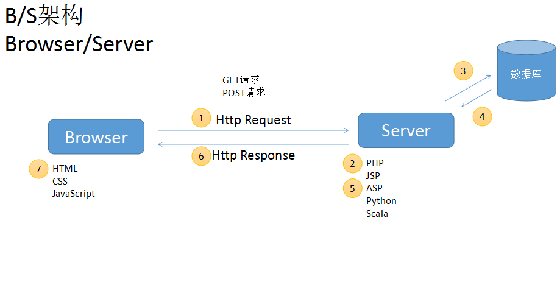
服务器上运行着一些程序，这些程序是PHP、JSP、ASP、Python、Scala等等，这些语言都是后台语言。
当用户从浏览器发出HTTP请求（点击了一个超级链接、输入了网址、提交了表单）之后，后台语言就开始执行了。后台语言往往需要根据这个HTTP请求携带的参数，进行不同的、差异化的工作，与数据库通信完毕之后，组件一个页面用HTTP响应发回给浏览器。浏览器解析渲染HTML、CSS和JS脚本。
1.2 集合PHP程序来复习GET请求和POST请求
PHP是一个语言，不能独立运行，必须运行在阿帕奇（Apache）之上。计算机只要安装了这些服务器的软件（比如阿帕奇、IIS、Nginx、Tomcat、glassfish）就能提供HTTP服务，此时计算机就是服务器了。
阿帕奇有一个最大的特点：就能能够自动根据文件的物理层次映射出URL。
| 物理文件的地址 | URL |
|---|---|
| 阿帕奇根目录/index.html | http://127.0.0.1/ |
| 阿帕奇根目录/a/index.html | http://127.0.0.1/a/ |
| 阿帕奇根目录/a/b/c/index.html | http://127.0.0.1/a/b/c/ |
下面复习一下GET请求和POST请求，我们结合PHP和数据库来做演示案例。
GET请求的哲学是：问服务器要东西，使用POST请求往往是传给服务器id，希望服务器发回这个id的文章。
下面就是一个简单的GET请求的PHP程序。
1 | <?php |
效果：
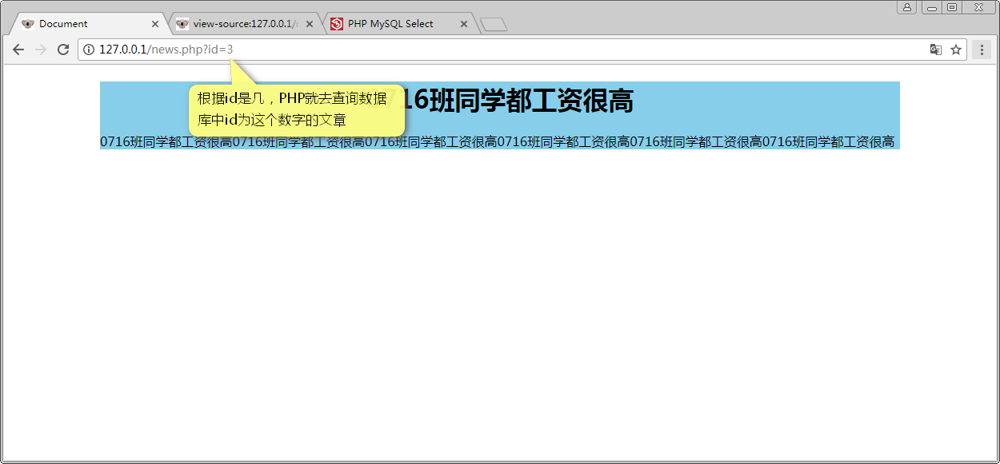
查看源代码：
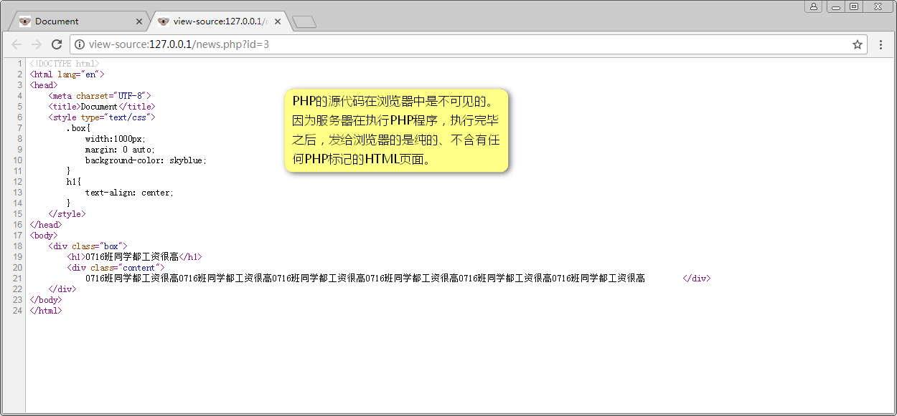
POST请求的哲学是：希望服务器根据我的参数来对数据库进行一些增、删、改的操作。
比如我们做一个表单页面houtai.html，这个页面中的表单在往tijiao.php中提交内容。tijiao.php负责写入数据库。
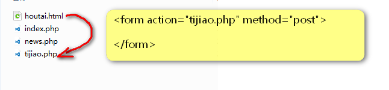
GET请求优缺点：便于分享网址、安全性不强、不能传超长的参数。
POST请求的优缺点： 不便于分享网址、安全性强、理论是无限长的参数。
总结一下你要会的东西：
HTTP有请求、响应。
HTTP请求有GET请求和POST请求的区别，要知道他们的优缺点和哲学。
知道PHP是如何和数据库交互的。
知道GET请求的参数和POST请求的参数。
服务器上的语言有哪些：PHP、JSP、ASP、Python、Scala等等。
今天，它迎来了Node.js。
Node.js将JavaScript的触角伸到了服务器上。Node.js让服务器上可以运行JS！
JS如今不是做个正则、做个轮播图、做个选项卡的浏览器端的语言了！今天，Node.JS可以让JS处理GET请求、POST请求、可以操作数据库！
二、Node.js的诞生和安装
2.1 创始人
Rayn Dahl发现：以老牌PHP为例，理论上一个8GB内存的服务器可以同时连接的最大用户数为4000个左右。要让Web应用程序支持更多的用户，就需要增加服务器的数量，而Web应用程序的硬件成本当然就上升了。
这个哥们就立志要发明一个平台，比PHP、JSP要有更高的性能、并发性。
他将Chrome浏览器的V8引擎（目前世界上最快的JS解析引擎）移植到了服务器上，开发出了Node.js平台。
2009年底，Ryan Dahl在柏林举行的JSConf EU会议上发表关于Node.js的演讲，之后Node.js逐渐流行于世。
Node.js是一个平台不是一个语言，语言仍然是JavaScript。此时Node.js平台可以让我们用JavaScript语言来开发服务器程序。
2.2 安装Node.js
node.js可以安装在windows、mac、linux上（绝大部分的服务器都是linux操作系统）。
语言是一样的，都是JavaScript，所以node.js特别像java虚拟机，大家只需要写一份语言，就可以运行在windows、mac、linux上。
nodejs官网：http://nodejs.org/
nodejs中文网：http://nodejs.cn/
下载nodejs：
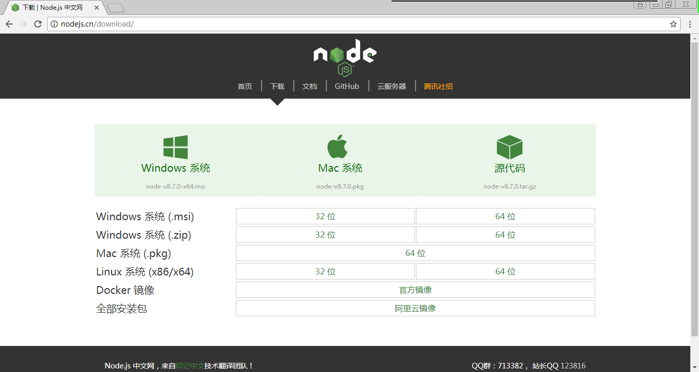
nodejs有稳定版和最新版之分，我们学习的是最新版v8.7.0，今天的稳定版是v6.0.0。
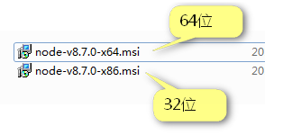
双击图标即可进行安装：
| 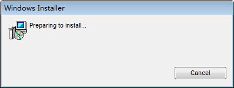 | 正在等待安装 |
|---|---|
| 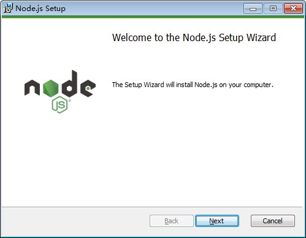 | 点击下一步next |
| 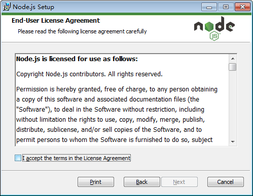 | 同意协议，然后下一步 |
| 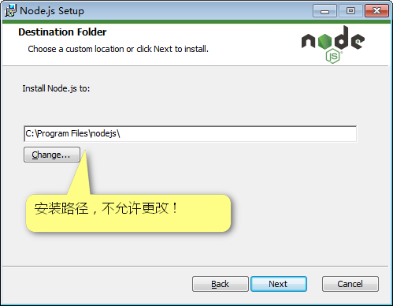 | |
| 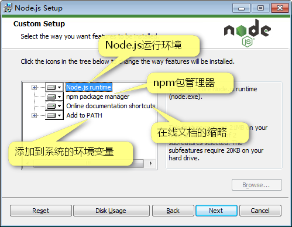 | nodejs的安装包给计算机安装了4个东西。见左图。 不需要我们进行什么操作，直接点击next。 |
| 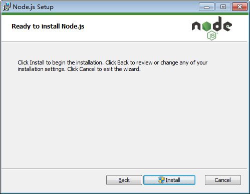 | 点击Install进行安装。 |
| 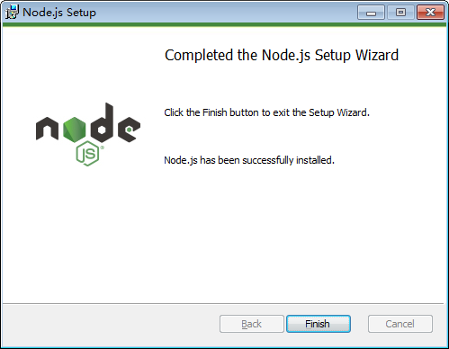 | 安装成功 |
我们要检查nodejs是否已经安装成功了。此时需要打开系统的”命令提示符”窗口。
| 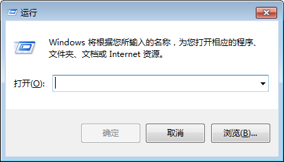 | 按windows徽标键 + R键 |
|---|---|
| 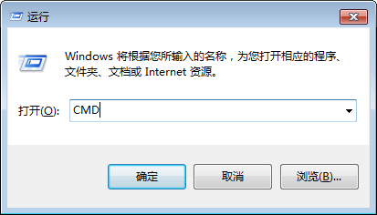 | 输入CMD按回车 CMD就是command命令的缩写。 |
| 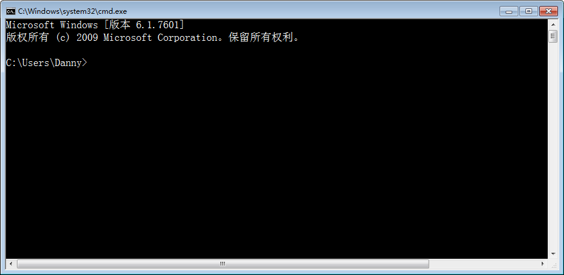 | 然后就能看见这个黑底白字的命令提示符窗口。 我们以后简称“CMD”窗口。 |
| 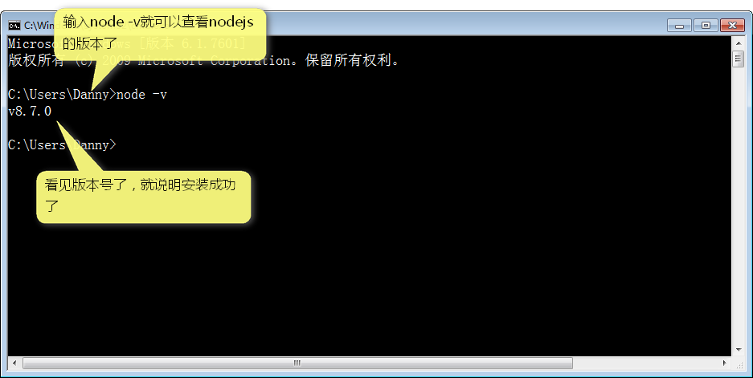 | 输入node -v 此时就能看见版本号，说明nodejs安装成功了。 |
2.3 什么是环境变量？
任何操作系统（windows、mac、linux）都有环境变量的概念，作用很简单：
在环境变量中的文件夹里面的所有exe程序都可以被当做系统级别的命令在CMD窗口中被调用。
对计算机图标点击属性，然后：
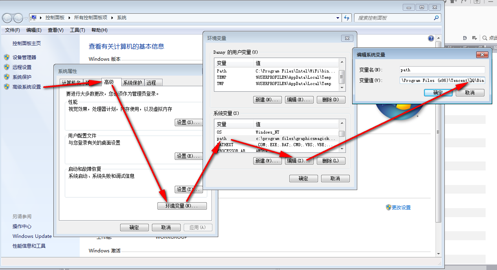
环境变量是用英语分号隔开的一系列文件夹的路径。比如老师耍宝，将QQ的文件夹添加进去了。
此时再次打开CMD创建，就可以运行QQ命令了：
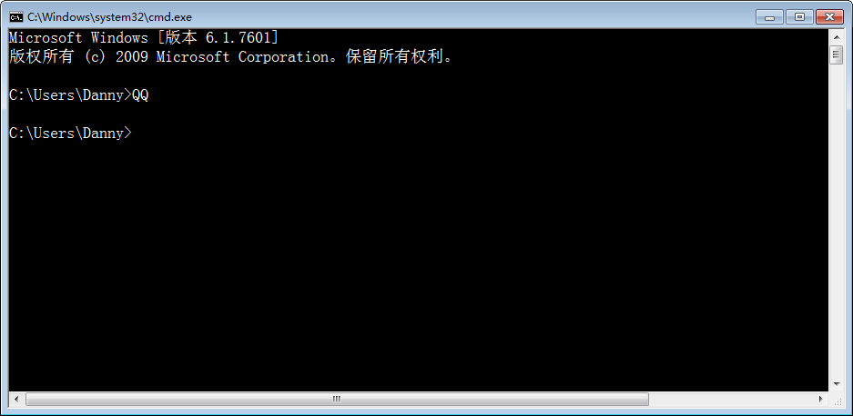
我们的node.js的msi安装包自动的将nodejs的安装目录设置为了环境变量。极大的方便了我们。
因为nodejs的目录在环境变量中，所以我们刚才可以在CMD中运行
node -v
三、Node.js的基本使用 - 运行谁就node谁
我们创建今天的案例文件夹，是c盘的node_study文件夹，里面创建day1文件夹。
我们先来认知一个事情：js的运行需要宿主环境。
我们创建一个01.js文件：
1 | for(var i = 0 ; i < 10 ; i++){ |
这个js文件不能直接拖入浏览器运行，因为没有html宿主环境。
我们必须创建html文件：
1 |
|
浏览这个html文件，此时控制台将有输出。
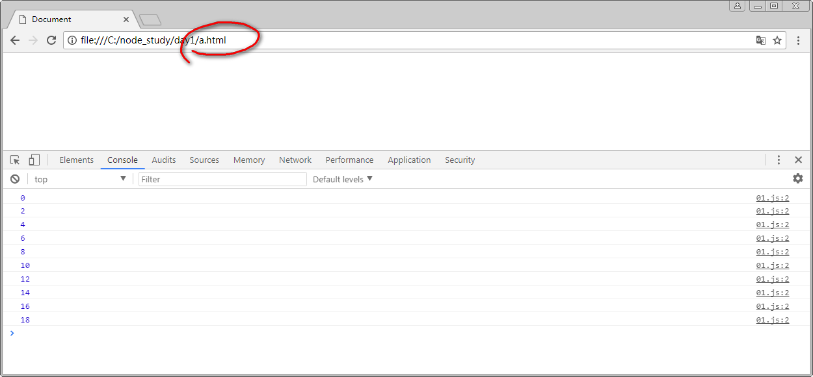
JS需要宿主环境才能运行。截止今日，我们只知道js的一个宿主环境，就是HTML。
今天我们迎来了新的宿主：nodejs平台！
在nodejs平台中运行js文件，此时需要使用CMD窗口。此时需要将CMD的”光标路径”更改为我们的项目文件夹。
此时使用下面的命令可以切换路径：
1 | cd 路径 |
cd就是change directory，切换文件夹的意思。
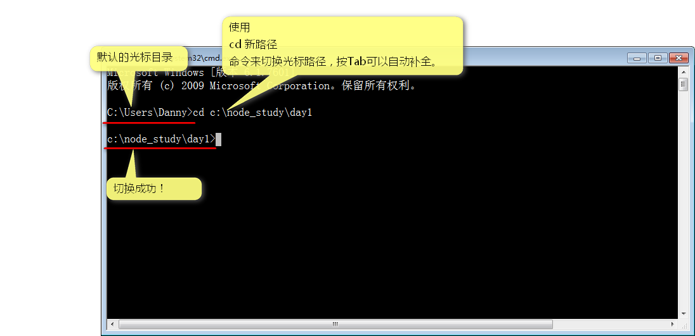
我们的口号是：运行谁就node谁
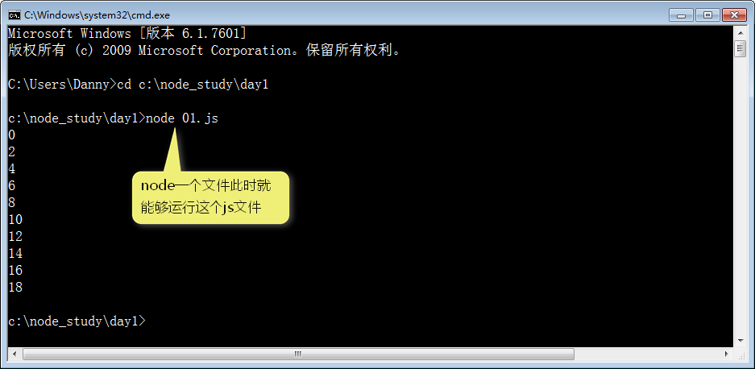
告诉大家一个快捷操作：
在项目文件夹中按住shift键的同时，点击鼠标右键，此时就能看见：
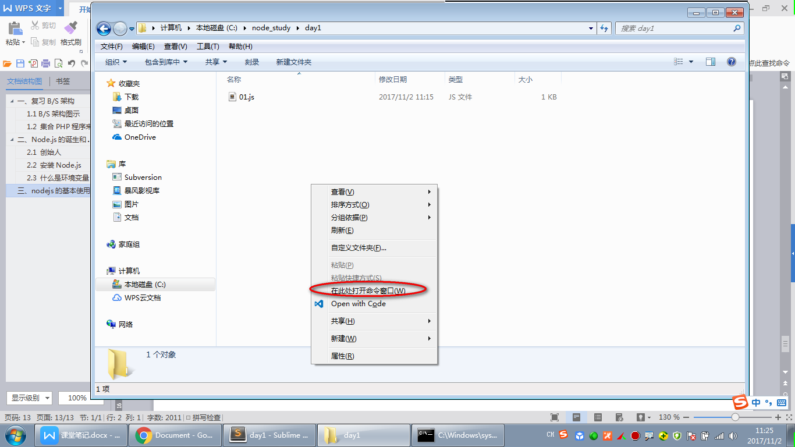
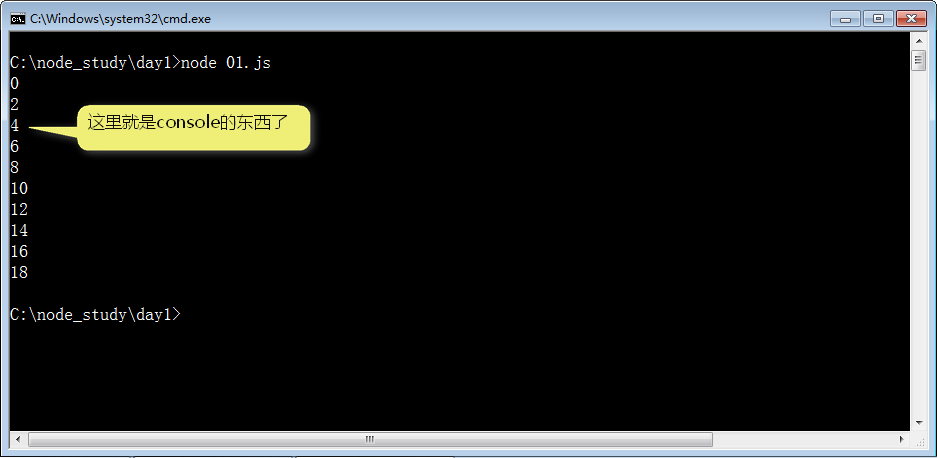
由于nodejs平台没有DOM所以不能使用下面的语法：
window、document、alert、document.getElementById()……
但是nodejs能够识别函数、if语句、for、while等等js核心语法：
1 | for(var i = 0 ; i < 10 ; i++){ |
补充一下：
1 | cls |
表示清屏
四、使用Node.js搭建服务器
4.1 最简单的demo
我们需要使用nodejs中的内置模块http模块，nodejs中有很多模块，我们最先使用的就是http模块。
1 | //得到内置http模块 |
先照着写，然后就可以运行这个程序。
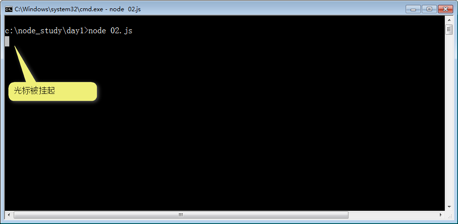
此时不要关闭CMD窗口！打开浏览器，输入网址：
冒号表示端口号，默认端口是80，但是我们的80被阿帕奇占用了，所以我们就使用3000端口了。
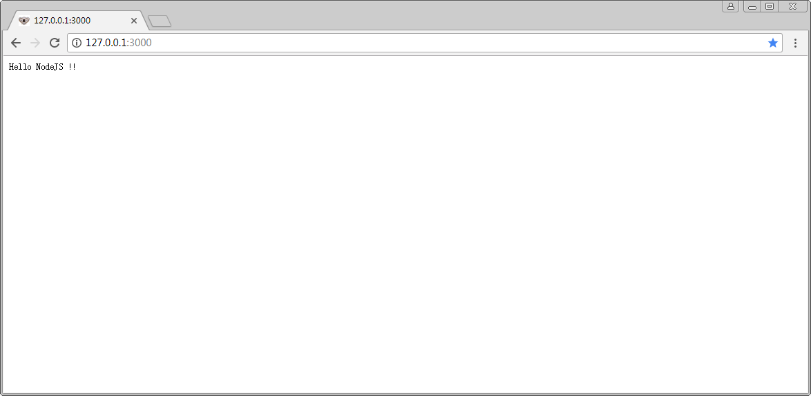
如果想要打断服务器的执行，此时在CMD中按ctrl+c键。
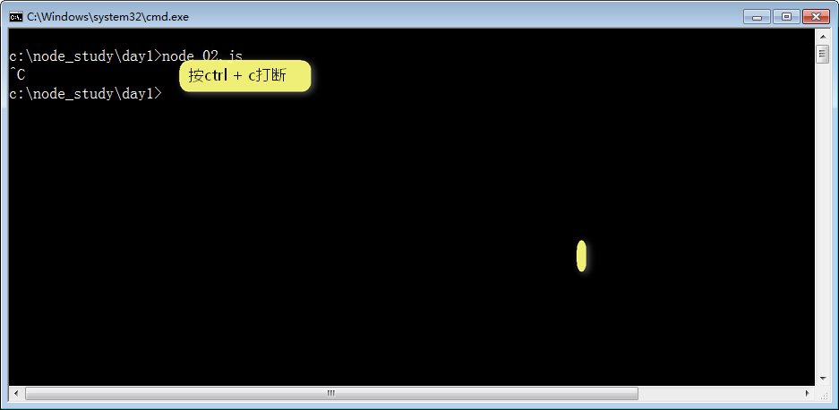
一旦打断了挂起的CMD，此时浏览器中就崩溃了：
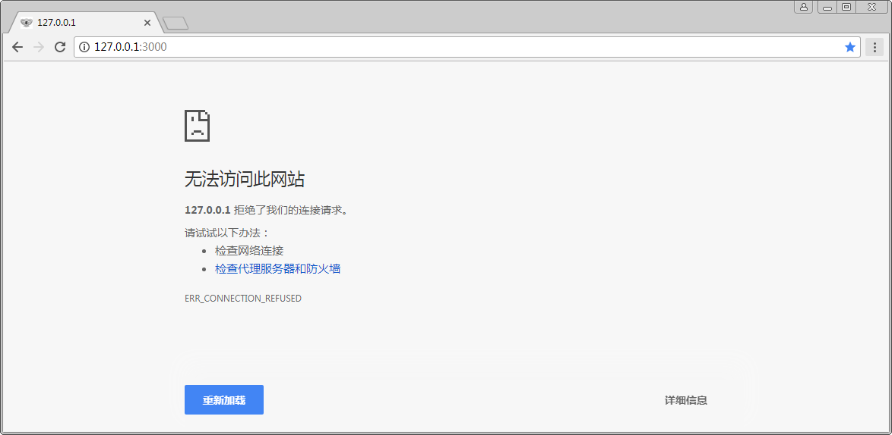
注意：如果改变了js文件，此时刷新浏览器没用，必须重新执行node命令！
两个问题：
●问题1：
1 | res.end("好高兴啊我买了一个iPhone" + (1+32)); |
在浏览器中查看源代码，不能看见1+32的运算结果的。这是因为程序运行在服务器上。
●问题2：
用户的电脑里面没有安装nodejs平台，此时也可以访问nodejs服务器。
因为nodejs运行在服务器上，发给客户端的时候已经变为纯的、平的HTML了！
补充：
● 多条输出用write，但是最后必须有end：
1 | res.write("哈哈"); |
● res.write()和res.end()中只能是字符串不能是数字：
1 | res.end(123); //错误的 |
● 可以结合HTML标签：
1 | res.end("<h1>你好，NodeJS我来了</h1>"); |
Node.js中有很多的内置模块，手册就是按模块来列出的API：
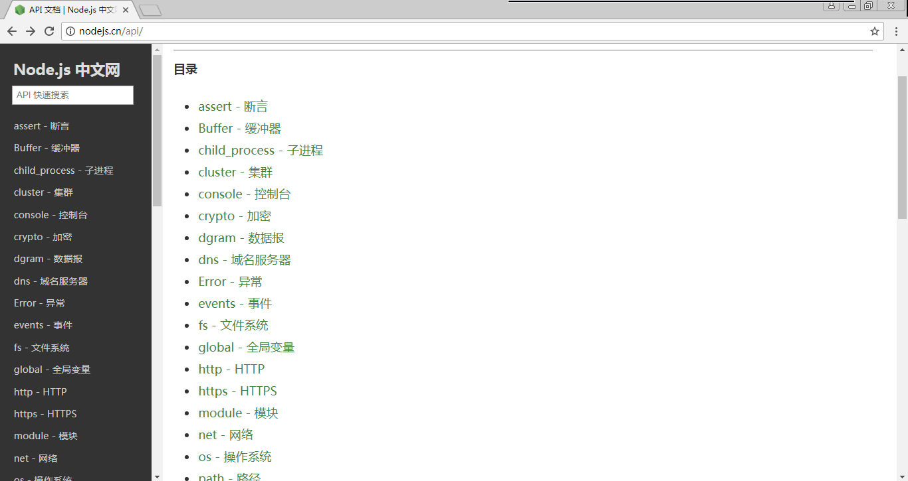
4.2 使用外置页面
我们现在的目标就是做一个外面的页面public/wangjunkai.html，此时就要使用新的内置模块fs。
fs模块最重要的API，就是readFile，可以异步读取文件，第一个参数就是URL，要读取的文件路径（注意：必须以./开头，表示从当前js文件出发寻找html文件）。第二个参数是回调函数，表示读取完毕之后做的事情。
1 | fs.readFile("./public/wangjunkai.html" , function(err , data){ |
http和fs共同配合完成这个事情：
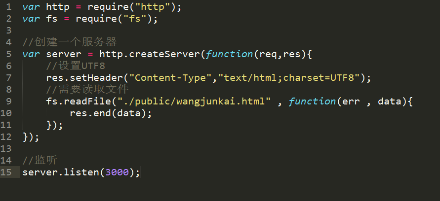
4.3 路由（重点）
上面的案例，不管输入什么URL，都是访问wangjunkai.html页面：
1 | var server = http.createServer(function(req,res){ |
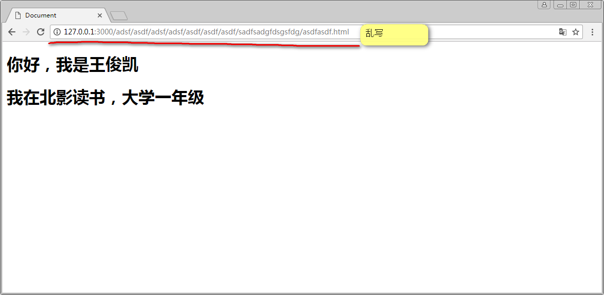
我们可以利用req.url得到用户输入的URL地址。
1 | var http = require("http"); |
顶层路由设计：
物理文件的层次和URL是没有关系的！
Node.js可以做顶层路由设计！一个页面想叫什么URL就可以叫做什么URL！
用户输入的URL可以被路由映射为任何HTML页面！
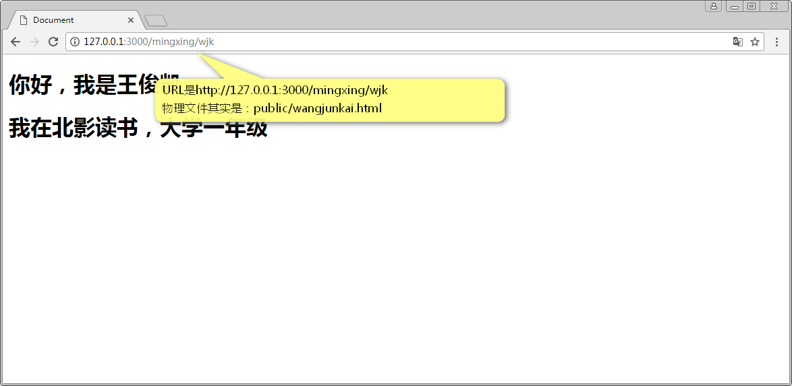
现在的时代主流，有意义的URL非常的重要。比如知乎的URL：
| URL | 用途 |
|---|---|
| https://www.zhihu.com/people/albanybear/activities | albanybear用户的活动 |
| https://www.zhihu.com/people/albanybear/answers | albanybear用户的回答 |
| https://www.zhihu.com/people/albanybear/asks | albanybear用户的提问 |
| https://www.zhihu.com/people/albanybear/posts | albanybear用户的文章 |
| https://www.zhihu.com/people/albanybear/columns | albanybear用户的专栏 |
| https://www.zhihu.com/people/albanybear/pins | albanybear用户的想法 |
| https://www.zhihu.com/people/albanybear/collections | albanybear用户的收藏 |
老一代的路由：
http://www.zhihu.com/tiwen.php?username=albanybear
http://www.zhihu.com/answers.php?username=albanybear
我们现在可以模拟知乎的路由，首先先复习正则表达式的知识：
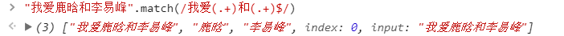
代码：
1 | var server = http.createServer(function(req,res){ |
我们就模拟出了知乎的路由设计：
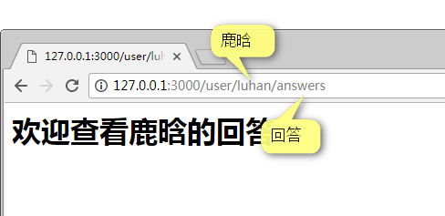
现在我们就不能认为根目录下有一个user文件夹，然后有luhan文件夹，然后有answers文件夹。
4.4 顶层路由设计有不方便的地方
我们刚才通过案例知道了顶层路由设计的方便之处，URL非常的规整，类似知乎的路由。
但是不方便的地方就是一些静态文件：图片、样式表等等。此时都需要一个一个开路由。
比如页面上插入一个图片：
1 | <img src="wangjunkai.png" alt="" |
此时就要专门给这个图片开路由：
1 | …… |
理论上：如果页面上有100个图片，此时就要开100个路由。
我们明天将会在express中介绍将一个文件夹”静态化”。就是指这个文件夹中的文件将自动拥有URL路由。
五、模块（重点）
5.1 HTML宿主环境中的多js文件
HTML宿主环境中，多个js文件共用一个html宿主，所以它们之间的作用域是打通的。
1 |
|
因为1.js文件中定义的a是全局变量就是window的属性，2.js文件中当然共用window对象。
nodejs是如何处理多个js文件的？多个js文件如何搭配工作，是后面40分钟的内容。
5.2 require谁就会运行谁
1 | ┣ app.js |
app.js:
1 | require("./a.js"); |
a.js:
1 | console.log("你好我是a.js"); |
现在node app.js
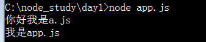
在nodejs中，可以js文件中require（引用）另一个js文件，此时就会立即运行那个引用的js文件。
app.js可以require a.js文件，a.js文件也可以require b.js文件。
5.3 js文件在Node.js中天生作用域隔离
1 | ┣ app.js |
在a.js文件中定义了所谓的”全局”m，然后app.js文件引用a.js之后，尝试显示m变量。
app.js:
1 | require("./a.js"); |
a.js：
1 | var m = 100; //尝试定义全局变量 |
此时node app.js报错了。
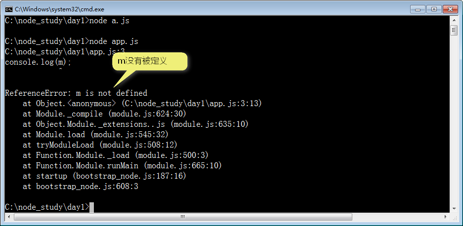
js文件在Node.js中天生作用域隔离的！为什么？
因为没有了window对象。
5.4 使用exports.** = **的语法进行暴露
1 | ┣ app.js |
a.js文件中定义了m值，并且进行了暴露。
1 | var m = 100; |
在app.js文件中：
1 | var a = require("./a.js"); |
需要注意的是两点：
① 建议：暴露的时候必须是exports.** = **， **必须一致。你别玩杂技。
明明变量是m你非要用n暴露。
1 | //错误的： |
虽然语法没有问题，但是成熟程序员不会这样玩儿。
② 建议：接收的时候，文件名是什么，就用什么接收。你别玩杂技。
1 | //正确的： |
nodejs在运行的时候，接受的那个变量（a）会自动成为exports对象。
exports.** = **的写法天生有namespace（命名空间）
1 | ┣ app.js |
yuan.js和juxing.js文件里面都定义了mianji和zhouchang函数，但是引入的时候由于又命名空间，所以不乱套。
1 | var yuan = require("./yuan.js"); |
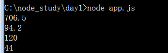
5.5 使用module.exports = **暴露
当一个js文件中仅仅希望暴露一个东西（通常是构造函数），此时我们可以使用module.exports = **的方法暴露。
1 | ┣ app.js |
People.js:
1 | function People(name,age,sex){ |
app.js:
1 | var People = require("./People.js"); |
如果仍然使用exports.People = People的方法暴露，此时就势必要：
1 | var xiaoming = new People.People("小明" , 12 , "男"); |
总结一下：
● 如果一个js文件中有多个东西要暴露（通常是暴露一些相关的函数比如面积、周长），此时用exports.** = **暴露。
● 如果一个js文件中只暴露一个文件（通常是构造函数），此时用module.exports = **;暴露。
5.6 使用文件夹
1 | ┣ app.js |
我们将yuan.js和juxing.js放入了一个叫做jihe的文件夹中，被index.js”统领”。
此时我们先看jihe/index.js:
1 | var juxing = require("./juxing.js"); |
这个文件很性感，接受之后什么都不调用直接暴露。这个文件的作用就是一个小中转器，是一个小统领。
此时yuan.js、juxing.js的文件内容和5.4一致，不再写了。
app.js
1 | var jihe = require("./jihe"); |
需要注意，当我们require()的时候，如果没有写.js后缀，此时nodejs将认为我们在引入一个文件夹，此时将会自动引入这个文件夹中的index.js文件。
也就是说
1 | var jihe = require("./jihe"); |
等价于：
1 | var jihe = require("./jihe/index.js") |
注意./不能省！！
5.7 神奇的node_modules文件夹
nodejs中有一个设置，就是如果js的文件夹放入了node_modules文件夹中，此时引用它的将可以不写./。
1 | ┣ app.js |
jihe文件夹中的内容和5.6小节一样的，不写了。
app.js引用jihe.js文件的时候，此时require的特别漂亮！
1 | var jihe = require("jihe"); |
也就是说：
| require的形式 | 引用的谁 |
|---|---|
| require(“./a.js”) | 同目录的a.js文件 |
| require(“./a”) | a文件夹中的index.js文件 |
| require(“a”) | node_modules文件夹中的a文件夹中的index.js文件 |
| require(“a.js”) | node_modules文件夹中的a.js |
5.8 模块的概念
当一个js文件可以独立完成一个事情，这个js文件就是一个模块。
当一些js文件共同配合完成一个事情，这些js文件就是一个模块。
模块（module，不是model模型）是一个文件的功能性的、组织性的概念，不是物理性的概念。
juxing.js是一个模块，因为它可以独立完成关于矩形的所有计算。
yuan.js也是一个模块，因为它可以独立完成关于圆形的所有计算。
他们结合在一起，成为jihe文件夹，jihe又称一个新模块。
六、npm的世界
6.1 npm install命令
这是一个模块的分享社区，我们可以免费的、自由的使用别人的模块。
而别人的模块，很可能也在使用其他人的模块。每个人都站在巨人的肩膀上，这个世界变得更简单，轮子不需要重复的造，我们只专注于造汽车。
比如有一天，老板让你实现当用户输入网址
的时候，页面显示一二三二一。或者一万两千三百二十一元。
此时你会路由的知识，但是不知道如何进行阿拉伯数字和汉语的转换。
找模块！找巨人！npm就是这样的社区，npm就是node package manager的意思。
node包管理器。
npm is the package manager for JavaScript and the world’s largest software registry. Discover packages of reusable code — and assemble them in powerful new ways.
npm是JavaScript的包管理器，是世界上最大的软件托管仓库。浏览这些包，这些包都是可服用的代码。组合他们开发出你自己的新的东西！
输入大写，按回车：
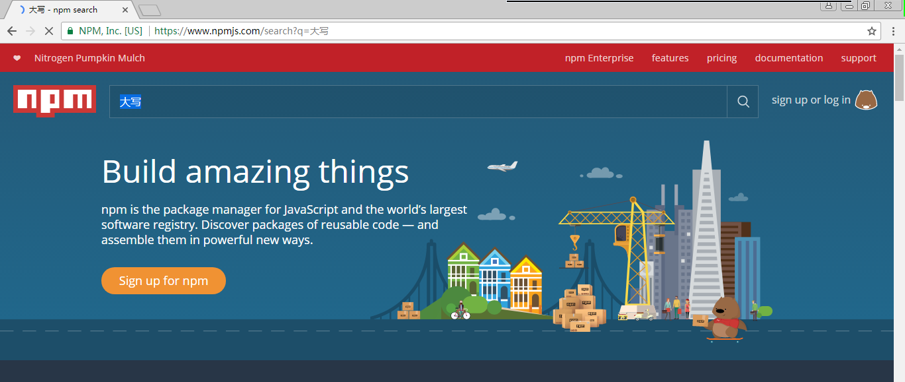
我们发现了一个叫做nzh的一个包，网址：https://www.npmjs.com/package/nzh
此时我们想要下载这个叫做nzh的包，此时我们使用CMD命令：
1 | npm install nzh |
npm包管理器随着nodejs安装而安装了。所以我们已经可以使用npm了。
注意要使用npm的时候，必须联网。
当我们输入npm install nzh之后，此时项目文件夹中就自动多了node\_modules文件夹。
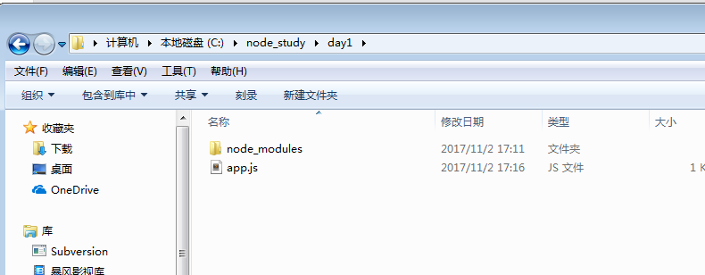
node_modules文件夹中就有了nzh文件夹！这是一个模块！
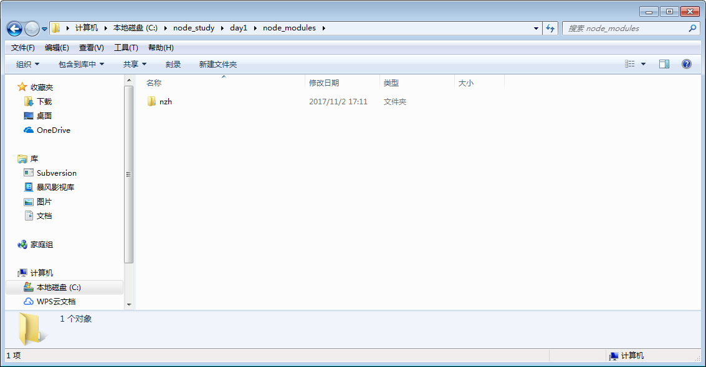
此时通过查看API我们可以写出app.js文件了：
1 | var nzh = require("nzh"); |
也就是说别人开发的nzh这个包现在就被我们自己使用了！
这里说一嘴，所有的API的路径都是
1 | https://www.npmjs.com/package/包名字 |
老板新需求：让你把1997年5月8日变为农历。
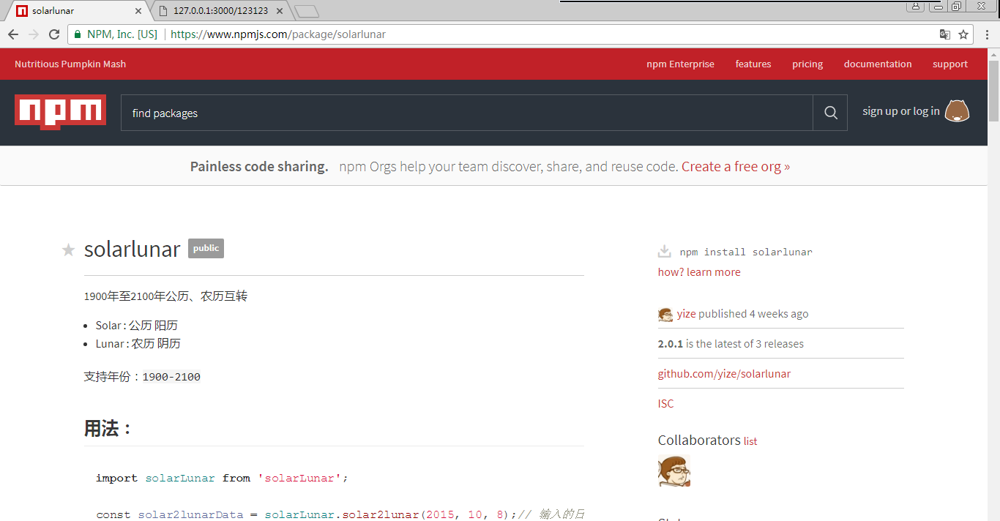
参考API，此时就能写出自己的程序：
1 | var solarLunar = require("solarlunar") |
老板新需求：将一个数组变为excel表格。
此时我们下载node-xlsx这个包，此时你会发现依赖的依赖也会被同时下载。
1 | npm install node-xlsx |
结合API我们写：
1 | var xlsx = require("node-xlsx"); |
6.2 依赖
我们从npm上下载的node_modules文件夹称之为依赖。
此时我们可以用package.json文件管理这些依赖，我们称为项目的”身份证”。
我们在开发项目的时候，第一步就是创建一个项目的身份证。
1 | npm init |
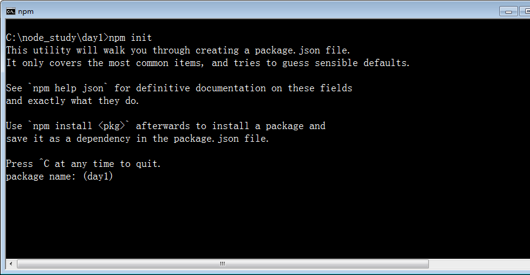
就会显示一个调查问卷。将引导你创建这个身份证。
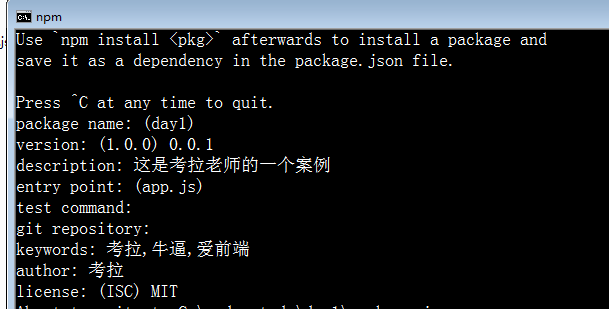
他会询问你包名字、版本、描述、入口文件、测试命令、git网址、关键词、作者、版权协议。
你回答一下，系统会猜测一些答案就是括号中的内容，直接按回车就是使用它。
系统会创建这个文件：
内容：
1 | { |
今后安装依赖的时候要加上--save后缀，比如：
1 | npm install nzh --save |
此时加上--save之后，我们身份证会自动更新一个依赖项：
1 | { |
有了这个有什么好处呢？？
此时我们的项目拷贝给别人的时候、做版本管理的时候，可以完全忽略node_modules文件夹！
因为我们任何使用可以使用
1 | npm install |
来安装项目的所有依赖。